Es una locura este virus, la Gripe Verde Evoluciona ¿Podrás Sobrevivir?
¿Estás listo para enfrentarte a nuevos niveles? Cada mapa es una nueva aventura.
Ha llegado la liquidacion de Existencias, hay 4 capitulos Hotel-Calles-Centro Comercial-Atrio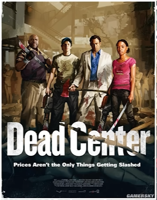 |
Nadie sobrevive para siempre, hay 3 capitulos Ribera-Bajo Tierra-Puerto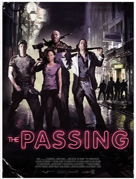 |
Debes swer asi de alto...PARA MORIR!, enfrentate a 5 niveles Autopista-Feria-Montana Rusa-Granja-Concierto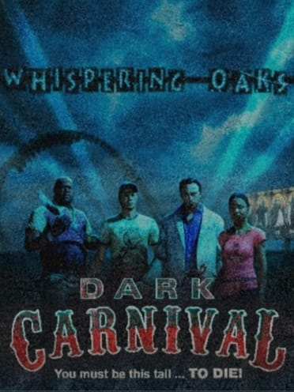 |
La salida mas rapida es la MUERTE, tiene 4 capitulos -Tablones-Pantano-Chabolas-Plantacion-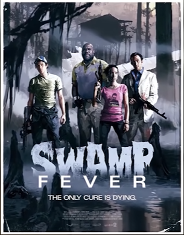 |
Ahora son 2 las plagas biblicas, son 5 niveles -Ciudad Factoria-Azucarera-Huida de la Azucarera-De regreso a la Ciudad-Huida de la Ciudad-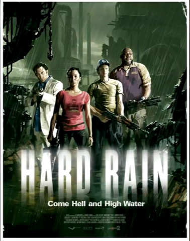 |
Esta ves, todo se ha venido abajo, son 5 capitulos -Muelle-Parque-Cementerio-Barrio Frances-Puente-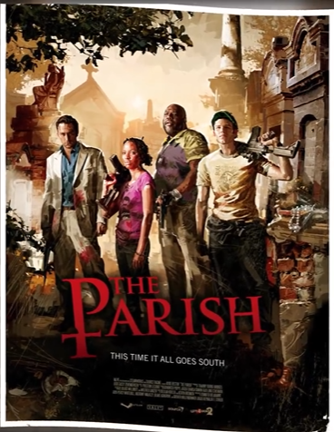 |
Recuerda que cada arma hará un distinto tipo de daño a cada zombi, lo cual afectará la dificultad del juego.
Cada zombi tiene habilidades diferentes, ¡Apréndelos aquí!
| 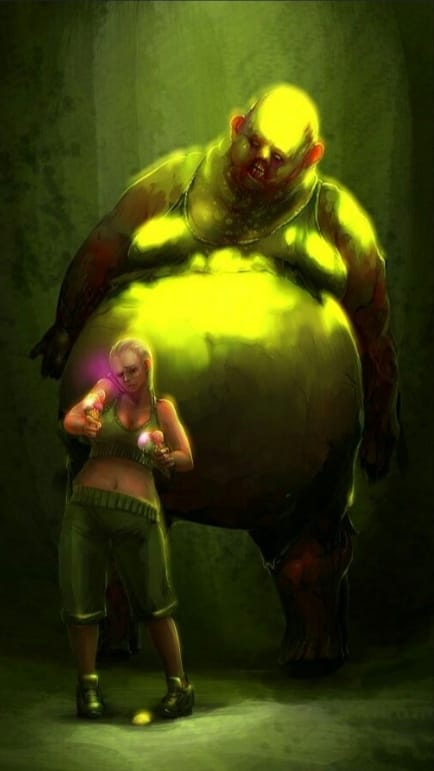 | 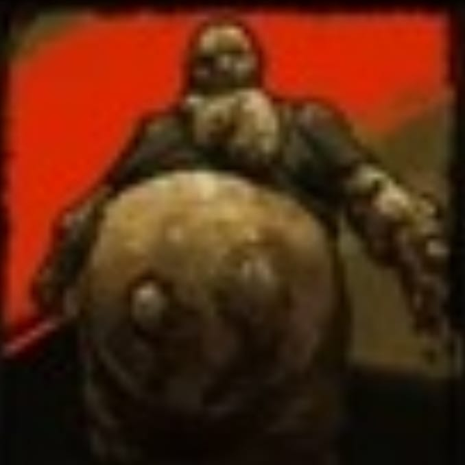El Boomer tiene la habilidad especial de vomitar un liquido especial que al impregnar a los supervivientes este liquido atraera una gran orda de zombis |
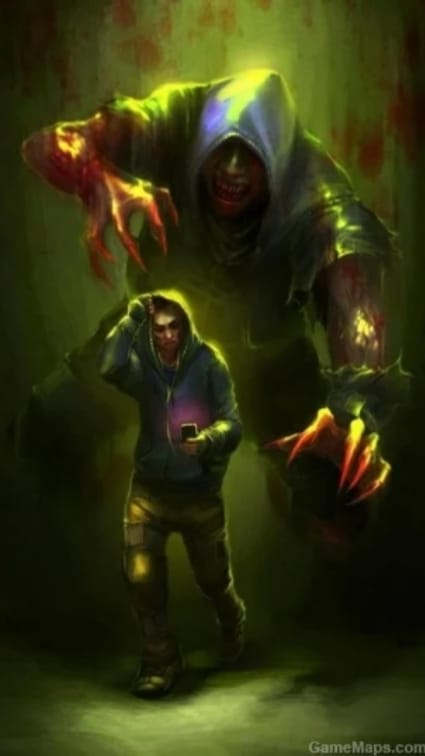 | 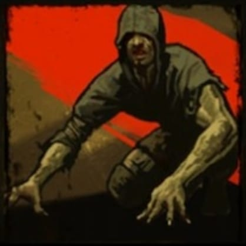El Hunter es capaz de saltar desde corta o larga distancia para atacar a los supervivientes y tumbarlos al suelo para arañarlos y rebajarles la vida hasta matarlos |
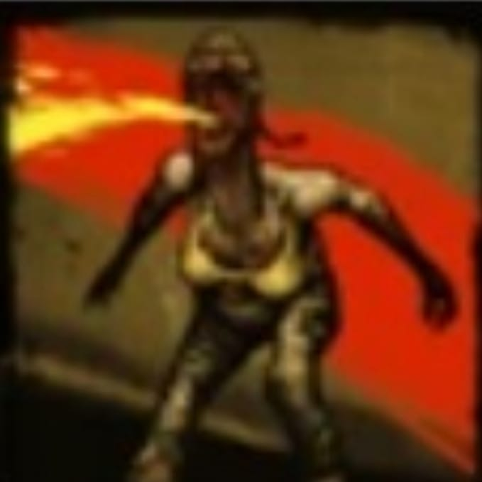La Spitter tiene la habilidad de tirar acido el cual ira haciendo daño gradualmente, mientras mas tiempo pases emcima del acido mas vida te quitara |
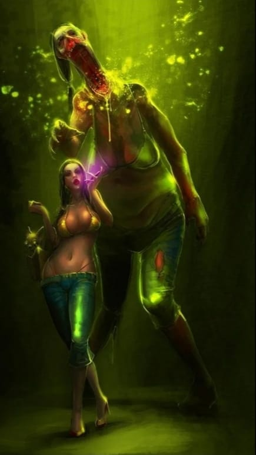 | 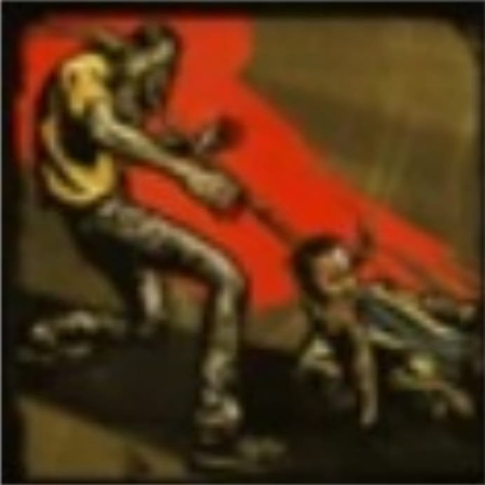el Smooker tiene la habilidad de poder alargar su lengua y asi agarrar a los supervivientes y arrastrarlos hacia el |
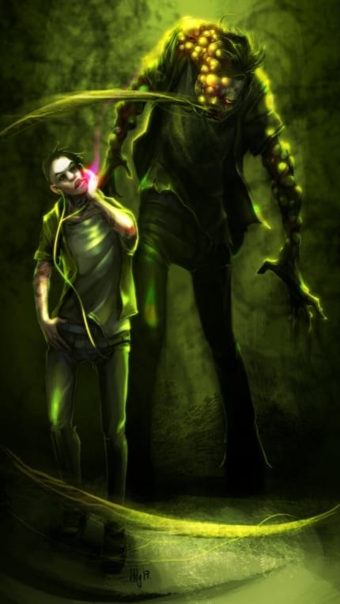 |
| 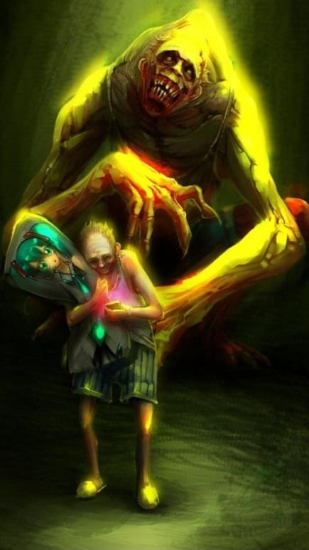 | 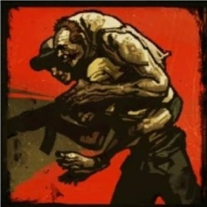El Jokey es un infectado especial de la cual su habilidad es saltar encima de los supervivientes y asi separarlos de los demas e incapacitarlo si no se lo mata a tiempo |
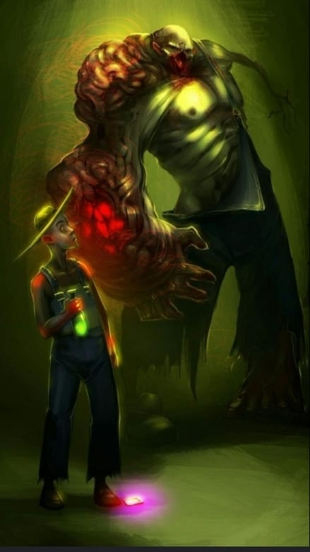 | 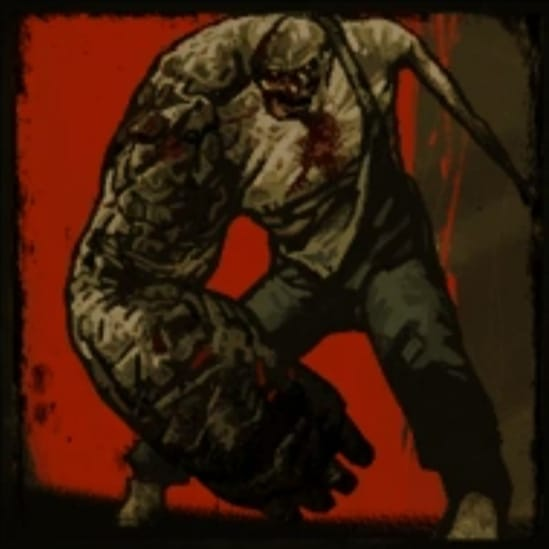El changer tiene la habilidad de correr y atrapar al superviviente para chocarlo comtra el suelo, una ves agarrada la presa no la soltara hasta que esta muera |
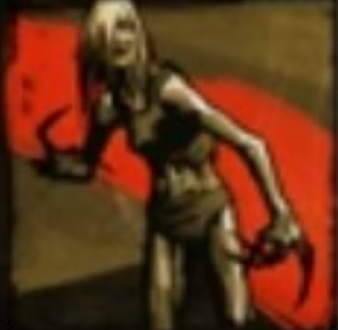La witch es un infectado que no ataca a menos que se le moleste, hay que tener mucho cuidado puesto que de un Golpe te puede quitar toda la vida |
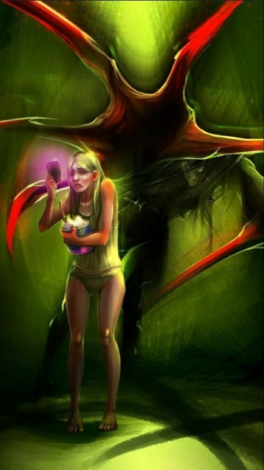 | 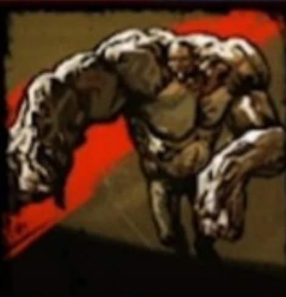El Tank el infectado mas fuerte este puede de un solo golpe hacer volar a los supervivientes aparte de tener la fuerza suficiente para agarrar y tirar tanto rocas como autos |
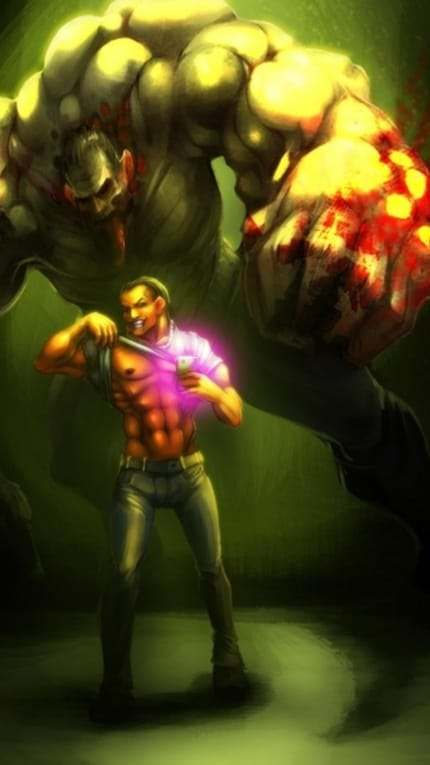 |
gabx7659@gmail.com